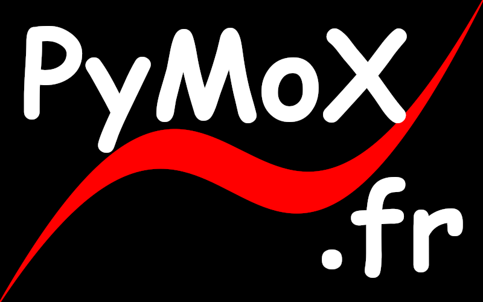

Bienvenue dans l'univers PyMoX 😊 !
Qu'est-ce que PyMoX ?⚓︎
PyMoX est un projet open-source qui vise à créer une communauté autour de la programmation avec Python, et tout ce qui gravite autour...
Site en contruction... En attendant, prépare-toi, et fait mumuse 😉 ...
Gabin disaisat dans l'un de ses films: "Je pense que le jour où l'on mettra les cons sur orbite, t'auras pas fini de tourner..."
Prérequis: Comprendre la programmation⚓︎
graph LR
A[**Objectif**]---->B{Plantage ?};
B---->|Oui| C[Investigations...];
C--->D[Debugage];
D-->B;
B------>|Non| E[Succès → Objectif atteint !];Donc, ouiais... Selon Gabin (Et pas que), faut sortir de la boucle !
Pour cela, joues avec les bases du langage Python⚓︎
... Et quand ça finira par te lasser, car, ça finira par te lasser..., alors, pour avoir un regain de motivation et en plus, l'aisance du Hot-reload 1 dans la CLI 2, il te faudra "p't'être bien" 4 "forker" ce projet 3, pour un jour, peut-être, devenir capable de faire un 'PR' 5...
Pour aller + loin⚓︎
... Et pour les vrais codeurs...
Pour voir vos modifications en Hot-reload 1 dans la CLI 2, et si vous avez donc déjà "fork" ce projet3, alors, ouvrez une CLI, rendez-vous dans le dossier du projet et lancez la commande suivante:
flet run .\docs\sympy\scripts\construction_sandbox_graph_77.py
Après, si ce que vous avez fait vous semble sympa, alors, committez votre travail et envoyez-le sur le dépôt officeil (Faites alors un P.R. 5).
# Tests (insensible à la casse)(Ctrl+I)
(Alt+: ; Ctrl pour inverser les colonnes)
(Esc)
# Tests(insensible à la casse)(Ctrl+I)
(Alt+: ; Ctrl pour inverser les colonnes)
(Esc)